OrthogonalDirection¶
-
class
OrthogonalDirection(*args)¶ Sampling following the orthogonal direction strategy.
- Available constructor:
OrthogonalDirection()
OrthogonalDirection(dimension, k)
Parameters: - dimension : integer
The dimension of the standard space. By default, 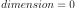 but automatically updated by the calling class.
- k : int
The number of elements in the linear combinations. By default,
 but automatically updated by the calling class.
but automatically updated by the calling class.
See also
Notes
This strategy is parameterized by
 , where
, where  is
the dimension of the input random vector 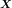. We generate one
direct orthonormalized basis 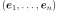 uniformly distributed in
the set of direct orthonormal bases. We consider all the normalized linear
combinations of 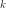 vectors chosen within the vectors of the basis, where
the coefficients of the linear combinations are in 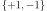. This
generates 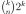 new vectors 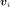. We sample according
to all the directions defined by the vectors .
is
the dimension of the input random vector 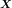. We generate one
direct orthonormalized basis 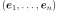 uniformly distributed in
the set of direct orthonormal bases. We consider all the normalized linear
combinations of 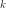 vectors chosen within the vectors of the basis, where
the coefficients of the linear combinations are in 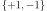. This
generates 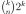 new vectors 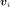. We sample according
to all the directions defined by the vectors .If
, we consider all the axes of the standard space.Methods
generate()Generate the sample. getClassName()Accessor to the object’s name. getDimension()Accessor to the dimension. getId()Accessor to the object’s id. getName()Accessor to the object’s name. getShadowedId()Accessor to the object’s shadowed id. getUniformUnitVectorRealization(*args)Accessor to a realization according to the uniform distribution. getVisibility()Accessor to the object’s visibility state. hasName()Test if the object is named. hasVisibleName()Test if the object has a distinguishable name. setDimension(dimension)Accessor to the dimension. setName(name)Accessor to the object’s name. setShadowedId(id)Accessor to the object’s shadowed id. setVisibility(visible)Accessor to the object’s visibility state. getUniformOrientationRealization -
__init__(*args)¶ Initialize self. See help(type(self)) for accurate signature.
-
generate()¶ Generate the sample.
Returns: - sample :
Sample The sample generated according to the orthogonal direction strategy.
- sample :
-
getClassName()¶ Accessor to the object’s name.
Returns: - class_name : str
The object class name (object.__class__.__name__).
-
getDimension()¶ Accessor to the dimension.
Returns: - dimension : int
Dimension of the standard space.
-
getId()¶ Accessor to the object’s id.
Returns: - id : int
Internal unique identifier.
-
getName()¶ Accessor to the object’s name.
Returns: - name : str
The name of the object.
-
getShadowedId()¶ Accessor to the object’s shadowed id.
Returns: - id : int
Internal unique identifier.
-
getUniformUnitVectorRealization(*args)¶ Accessor to a realization according to the uniform distribution.
Parameters: - dimension : int
The dimension of the sphere unity (which is the dimension of the standard space).
Returns: - sample :
Point The realization of a vector on the sphere unity, according to the uniform distribution.
-
getVisibility()¶ Accessor to the object’s visibility state.
Returns: - visible : bool
Visibility flag.
-
hasName()¶ Test if the object is named.
Returns: - hasName : bool
True if the name is not empty.
-
hasVisibleName()¶ Test if the object has a distinguishable name.
Returns: - hasVisibleName : bool
True if the name is not empty and not the default one.
-
setDimension(dimension)¶ Accessor to the dimension.
Parameters: - dimension : int
Dimension of the standard space.
-
setName(name)¶ Accessor to the object’s name.
Parameters: - name : str
The name of the object.
-
setShadowedId(id)¶ Accessor to the object’s shadowed id.
Parameters: - id : int
Internal unique identifier.
-
setVisibility(visible)¶ Accessor to the object’s visibility state.
Parameters: - visible : bool
Visibility flag.